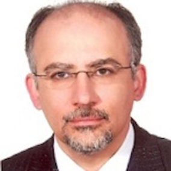
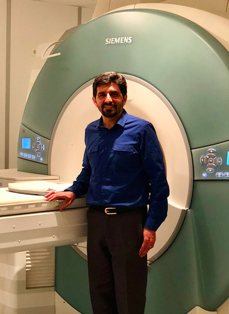
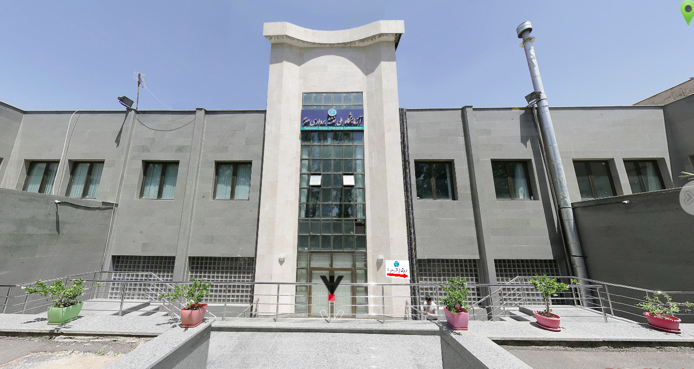
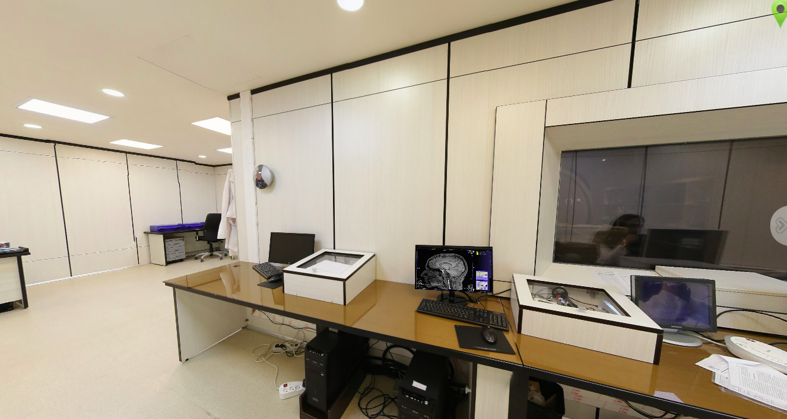

|
For some time now, intolerance at the political level has been propagated throughout the world. However, we as a scientific community subscribe to inclusivity from all cultures and nationalities, and value diversity. In this light, we would like to highlight some of the challenges faced by some of our international colleagues, some of their biggest achievements despite these challenges, as well as provide a platform to voice their opinions and concerns on scientific inclusion. There are parts of the world that are far from our minds when considering brain-mapping research - Iran is certainly one of them. The last few decades have seen a massive Iranian exodus of highly trained individuals. As a result, this secluded country has produced a great number of researchers who now work and live abroad. In fact, many of us working in neuroimaging share frequent interactions with Iranian researchers and trainees, and these interactions have provided a glimpse into the state of science and education in Iran. I have come to understand that some of the top research-intensive universities in Iran in the field of brain mapping include Shahid Beheshti University, the University of Tehran, Institute for Research in Fundamental Sciences. When it comes to neuroimaging research, the University of Tehran, Shahid Beheshti University and AmirKabir University figure prominently. Researchers who work in Iran, however, see not only the challenges but also tremendous potential in Iranian research. On the heels of the Persian New Year, we caught up with two Iranian imaging scientists who wish to share their distinct views and experiences with the OHBM international community. Dr. Mojtaba Zarei (MD, PhD, FRCP), Professor of Neurology and Neuroscience and Director of the Institute of Medical Science and Technology at Shahid Beheshti University in Tehran. Part 1: Dr. Mojtaba Zarei Dr. Abbas Nasiraei Moghaddam (PhD), at the Institute for Research in Fundamental Sciences (IPM), standing next to one of the few research MRI systems in Iran. Jean Chen (JC): Where did you receive your training, and what inspired you to study brain imaging? Mojtaba Zarei (MZ): I was inspired to study brain mapping by my 3rd year high-school teacher and then by the work of Frank Duffy while in the early years of medical school. I completed my MD at Shiraz University of Medical Sciences in 1990, focusing on brain electrical activity mapping. Afterwards, I moved to King’s College London for my PhD in cortical electrophysiology, mapping out sensorimotor cortex of rat after embryonic neural transplantation. In 1996, I resumed my practice in Clinical Medicine and Neurology, first at London, then at Cambridge, Oxford and Birmingham (UK). In 1999, I restarted my research in cognitive neurology under Prof. John Hodges and later in Chicago with Prof Marsel Mesulam. In 2002, I became a postdoc in the Oxford Center for Functional Magnetic Resonance Imaging of the Brain (FMRIB) under Prof. Paul Matthews. I went on to become Senior Clinical Fellow at FMRIB in 2006. As part of this, I established the Imaging in Neurodegeneration Group in Oxford, which was later continued by colleagues. Following that, I moved to the University of Nottingham in 2012. JC: Given your foreign training experiences, what inspired you to move back to Iran? MZ: Iranians commonly maintain strong family ties even after moving abroad. I moved back to Iran during a time when the government was prepared to invest heavily in neuroimaging research. In 2013, I was invited to return by the Iranian Ministry of Health to establish the National Brain Mapping Centre. This negotiation included an equipment grant of $10,000,000 USD for the centre from the Office of Vice-President for Science and Technology. I was appointed Full Professor of Shahid Beheshti University, Senior Adviser to the Ministry of Health, and the Director of National Brain Mapping Centre based in Shahid Beheshti University of Medical Science. In the Ministry of Health, I designed and implemented a national Clinician-Scientist Program for the first time in Iran. I was also instrumental in founding National Institute for Medical Research Development (NIMAD), which was modeled from the Medical Research Council in the UK. This organization is now the main independent governmental grant awarding body with seven scientific committees. JC: How would you describe the brain-mapping landscape in Iran? In terms of major infrastructure, labs, programs, universities involved in brain-mapping research? MZ: The major labs are mostly located in the capital, Tehran. The major players in neuroimaging research include the University of Tehran, Shahid Beheshti University and AmirKabir University of Technology. There is a 3T GE MRI in the Iman Khomeni Hospital that is shared by researchers and clinicians. There are also two research-dedicated 3 Tesla Siemens MR scanners, one at the Institute of Research in Fundamental Sciences, and the other at the National Brain Mapping Lab. There are also 1.5 T Siemens Avanto systems in Iran that can be used for research but the most active one is at Kermanshah University of Medical Sciences. JC: Are there formal national or regional-wide meetings or organizations devoted to brain mapping? MZ: Indeed there are. Since 2014 I have been responsible for organizing the annual Iranian Human Brain Mapping Congress, involving an international audience with eminent scientists as speakers. In addition, in 2005, I invited my former colleagues from the UK, including Heidi Johansen-berg, Matthew Rushworth and Christian Beckmann to teach at the first Brain Mapping Workshop in Iran. There is also the Iranian Society for Cognitive Science and Technology, of which I am the current president. Furthermore, at the moment, our institution runs the only regular and long term hands-on brain mapping teaching program in the country. JC: What are the biggest challenges facing Iranian brain-mapping researchers that you would like the OHBM to be aware of? MZ: The obvious challenge is that due to travel restrictions, Iranian researchers are not always able to attend OHBM meetings. Perhaps with developments in web platforms, this difficulty could be somewhat circumvented. Within the country however, given the limited resources, funding is not necessarily distributed in the most productive way, and there has yet to be an effective plan to utilize the infrastructure that is in place. On top of that, competition for research funding is politicized, and I fear that the requirement for political connections may be hindering research and the development of a younger generation of researchers. Any international mechanism (financial or otherwise) to directly support young and enthusiastic scientists would be welcome. JC: Does the Iranian education system foster research and encourage young people to enter research? For example, are there scholarships available to help students enter research? MZ: Yes, there is a lot of encouragement but it translates little to financial support. Most MSc or PhD students do not get paid during their study, which makes life difficult for them during these years. Postdoc positions (12-18 months) have increased in the last few years, particularly for those who would have obtained their PhD abroad. There are a lot of workshops, but these are often aimed at raising income. JC: Are there government funding bodies to fund research? If so, how difficult is it to obtain funding, albeit it limited? MZ: There are a number of grant awarding bodies that provide funding for brain mapping research, including the National Institute for Medical Research Development (NIMAD), National Science Foundation, and the Cognitive Science and Technology Council. JC: How did you build up your lab in Iran? MZ: When I returned to Iran, I got official permission from the Ministry of Health to establish Brain Mapping Centre at the Tehran University of Medical Sciences. I then received additional permission from the Ministry of Health to establish the National Brain Mapping Centre in Shahid Beheshti University of Medical Sciences. However, after 2 years, with government changes, our funding was stopped. I obtained permission from the Ministry of Science and Technology to establish the Institute of Medical Science and Technology less than 2 years ago. Our researchers and labs are located in this Institute. We established international collaborations with the University of South Denmark, the University of Pennsylvania, University Nantes, and University of South California. The latter is where the ENIGMA Sleep project is. We are now leading the ENIGMA Sleep Group. More collaborations are being developed, and funding for these projects are often obtained from international bodies. JC: What are the career prospects for your graduate students and perhaps for other foreign-trained Iranian brain-mapping researchers hoping to return to Iran? MZ: Not much in Iran at the moment, many will leave the country for PhD positions and postdoc training. Some get recruited for teaching and research in Iranian Universities. I have written a curriculum for training PhD students specifically for brain mapping, but it has to be approved by the Ministry of Education before I can actually start the program. However, there are numerous upcoming opportunities for scientists who have been trained in the best western programs. Part 2: Dr. Abbas Nasiraei Moghaddam On a later occasion, I had the pleasure to speak with Dr. Abbas Nasiraei Moghaddam. Dr. Moghaddam is Associate Professor in Biomedical Engineering at Amirkabir University of Technology in Tehran, one of the top universities in Iran and a frontrunner in neuroimaging research. Dr. Moghaddam is one of the premier MRI physicists in Iran, and for the past 8 years, has been director of the Advanced Medical Imaging Lab at Amirkabir University. For most of that time, he has also been affiliated with the School of Cognitive Sciences at the Institute for Research in Fundamental Sciences (IPM). Jean Chen (JC): I understand that you are the founder of the Iranian Chapter of the ISMRM (International Society for Magnetic Resonance in Medicine). Where did you receive your training, and what inspired you to study brain imaging? Abbas Moghaddam (AM): I received my BSc in Electrical Engineering in 1995 from the University of Tehran, and completed my MSc at the same, under the guidance of Dr. Hamid Soltanian-Zadeh. Dr. Soltanian-Zadeh was the first person to teach MRI Physics in Iran (21 years ago), and he initiated me into the field of brain imaging. Afterwards, I went on to work at Washington University in St. Louis for two years (in cardiac imaging) before starting my PhD at the California Institute of Technology (Caltech). It was followed up by a few years of postdoc at the University of California in Los Angeles (UCLA). JC: Given your foreign training experiences, what inspired you to move back to Iran? AM: Iran is my home, where my parents, siblings and roots are. Prior to returning, I was in the US for a total of seven years, but for fear of travel restrictions, I did not visit Iran even once. It made me realize that I did not want to be away from my home for so long again. However, I retained a part-time appointment at the University of Southern California to allow me to facilitate my collaborations with my American colleagues. JC: How would you describe the brain-mapping landscape in Iran? In terms of major infrastructure, labs, programs, universities involved in brain-mapping research? AM: In Iran, most of the MRI systems are for clinical use. There is only one research-dedicated scanner (Siemens Prisma 3 Tesla), which is at the National Brain Mapping Lab (NBML). It is sited at the University of Tehran, which is where I first got into medical imaging. The NBML is not affiliated with any institution, but provides access to all researchers in Iran. The IPM system (Siemens Trio 3 Tesla) was purchased for the IPM, but due to regulations from the Ministry of Health, it was initially sited at the Imam Khomeini Hospital in Tehran. After 4 years, it was recently moved to the IPM, and is now essentially dedicated to research. As a result, we now have a unique opportunity to do MRI research at the IPM. The School of Cognitive Sciences at the IPM was directed by Dr. Hossein Esteky for over 15 years. Dr. Esteky is a world-renowned vision scientist that first drew the world’s attention to neuroscience research in Iran with his publication in Nature. Currently, the research landscape in Iran is rapidly changing, allowing us to develop new areas of research. Amirkabir University is Iran’s leader in MRI Physics research, and its School of Biomedical Engineering is one of the oldest in the world (25 years old). Here at the IPM, we have about 40 students doing research in cognitive science. When I was at UCLA, I did sequence programming, but I did not have access to it when I first returned to Iran. Now we are in the process of negotiating a research agreement with Siemens that would allow us to do sequence development here as well. This is an exciting time.  National Brain Mapping Lab, University of Tehran  MRI Facility at the National Brain Mapping Laboratory (NBML), Tehran JC: What are the biggest strengths and challenges facing Iranian brain-mapping researchers that you would like the OHBM to be aware of? AM: We have excellent human resources. The students are well trained and eager for knowledge. Often, my students would have scored near the top during the Iranian University Entrance Exams. However, for many years, neuroimaging research in Iran was heavily focused on image processing, perhaps due to our lack of research-dedicated imaging infrastructure. We have labs that publish heavily on imaging processing algorithms. But without co-developing neuroscience and imaging physics, such a research program would lose its competitive edge. This is perhaps our biggest challenge. Since 18 months ago, the newly established NBML has been providing access to imaging facilities, including MRI, EEG, TMS and fNIRS, but researchers in Iran are still trying to adapt to a culture of doing their own data acquisition. Of course, Iranian researchers suffer from travel restrictions. For example, we are glad that this year’s meeting of the ISMRM is in Europe (Paris). Had it been in the US, we would not be able to attend. I am thankful that my international collaborations have allowed to get around such challenges. Science should have no boundaries. JC: I understand that research funding for brain imaging is limited in Iran. In this climate, how difficult is it for you to obtain funding? AM: The funding levels are certainly nowhere near the levels in the developed world. However, nearly everyone I know has funding, and no one has had stress due to lack of funding. This is in strong contrast with my colleagues in the US. One thing that is not well understood by the west is that in Iran, research is not nearly as costly. Students do not typically receive stipends, and scanning is fully subsidized, therefore we only need funding for traveling, publishing and so on. This makes it possible to conduct relatively big studies with little funding. Having said that, there are multiple types of grants that we need to apply for. For instance, traveling is covered by a different type of grant from regular research expenditure. The system is actually much more relaxed than in the west. JC: How did you build up your lab in Iran? AM: Biomedical Engineering has attracted a lot of interest from students in recent years, and I have had many applicants. When I interview students, I emphasize that I do research in Imaging and not in Image Processing. They are still getting used to the concept, but drawn by the success of my previous students. In addition, I set high standards for my students and do not hesitate to reject students that do not meet the requirements. In my institution, we have also set up joint-degree programs with foreign institutions in the UK and Australia. I would really like to expand this field of research in Iran, but that too will take time. JC: What types of research questions are you interested in? AM: I am interested in developing both functional and quantitative MRI sequences to improve brain imaging. In terms of fMRI, we are interested in improving the neural specificity of the imaging technique as well as developing brain-connectivity processing methods. In quantitative MRI, we are developing new imaging technique for T1 and T2 mapping. I first learned MR Physics at the University of Tehran, when I worked with Dr. Hamid Soltanian-Zadeh; this continues to be a big focus for my research. In the US, my research was in cardiac imaging, but when I moved back to Iran and started my affiliation with the IPM (at the recommendation of Dr. Soltanian-Zadeh), I started to do brain-imaging research. One of my recently graduated PhD students worked on developing a new MRI sequence. As we do not yet have a research agreement with Siemens, he did this work in collaboration with the group of Dr. David Norris in the Netherlands, and spent 15 months in the Norris lab. This resulted in a patent and 2 articles, and it was the first thesis on MR Physics in Iran. I have another student working on structural and functional brain connectivity. She worked with Patric Hagmann in Switzerland. This is mainly on image processing and neuroscience. JC: Finally, what are the career prospects for your graduate students and perhaps for other foreign-trained Iranian brain-mapping researchers hoping to return to Iran? AM: As I mentioned, we are hungry for MRI expertise, but the job situation in Iran is very uncertain. Brain Imaging is still a young field, and we certainly need more researchers to help us build up the programs. Meanwhile, I do encourage my students to see other places and gain other experiences. Many of my students have gone on to study in labs abroad, including Germany, the Netherlands and Canada. Postamble (JC): As Dr. Moghaddam said, science should have no boundaries. What may seem to be challenges are also potential opportunities. Iranian scientists are passionate about their research as we are in the rest of the world. They are defying great odds to build up a research program and to provide their young generation with new opportunities. Also, although the current involvement of female scientists in brain-mapping research accounts for <10% of all users, the increasing dominance of female trainees at the graduate level will likely change this. In an installment about Iranian trainees, you will also hear the thoughts of early career researchers from Iran and around the world.
0 Comments
Your comment will be posted after it is approved.
Leave a Reply. |
BLOG HOME
Archives
October 2022
|
 RSS Feed
RSS Feed